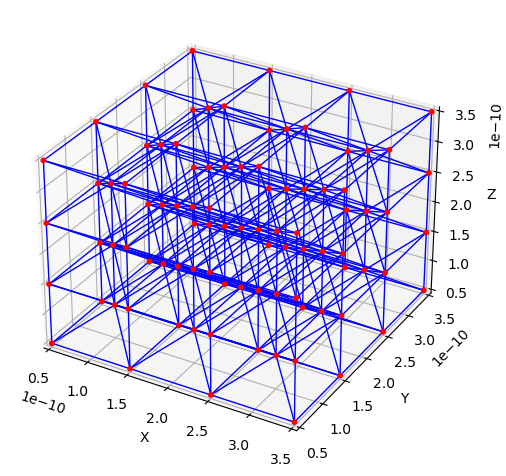
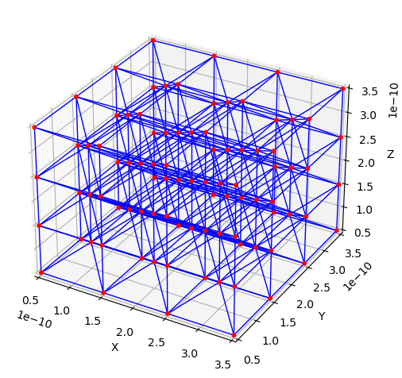

Generating Networks and Quick Visualization#
OpenPNM includes a variety of network generators. This notebook cover the use of a few commons ones which is a good primer for for the rest of this tutorial series. It also illustrates how to quickly visualize networks for inspection while developing and troubleshoot. Full visualization is best done in a dedicated software like paraview or draongfly.
import openpnm as op
import numpy as np
import matplotlib.pyplot as plt
Cubic#
The standard cubic network is the basic starting point for pore network modeling. They are simple but still quite useful since all the key behaviors seen in a porous material are present in cubic network, such as shielding, percolation, and so on.
pn = op.network.Cubic(shape=[4, 4, 4], spacing=1e-5)
ax = op.visualization.plot_coordinates(pn)
ax = op.visualization.plot_connections(pn, ax=ax)

.. tip:: Quick Visualization in the IDE
The above block uses `op.visualization.plot_coordinates` and `op.visualization.plot_connections`. The options for visualization are explored late in this tutorial.
The shape and spacing of the network can both be altered:
pn = op.network.Cubic(shape=[8, 4, 2], spacing=[10e-5, 5e-5, 4e-5])
ax = op.visualization.plot_coordinates(pn)
ax = op.visualization.plot_connections(pn, ax=ax)

It is also possible to add more than just the standard 6 connections:
pn = op.network.Cubic(shape=[4, 4, 4], connectivity=26)
ax = op.visualization.plot_coordinates(pn)
ax = op.visualization.plot_connections(pn, ax=ax)

One of the uses of a 26-connreadd network is the removal of throats at random to create a more natural topology. There is a more detailed description of how to manipulate networks in a following tutorial, but here we’ll introduce the topotools module, which contains the trim function which allows us to delete some throats or pores:
pn = op.network.Cubic(shape=[4, 4, 4], connectivity=26)
np.random.seed(0)
drop = np.random.randint(0, pn.Nt, 500)
op.topotools.trim(network=pn, throats=drop)
ax = op.visualization.plot_coordinates(pn)
ax = op.visualization.plot_connections(pn, ax=ax)

.. tip:: Printing objects to see their details
It is very common practice to print the objects at the interactive prompt to see its details using `print(pn)` for example.
print(pn)
══════════════════════════════════════════════════════════════════════════════
net : <openpnm.network.Cubic at 0x7fc859aa0860>
――――――――――――――――――――――――――――――――――――――――――――――――――――――――――――――――――――――――――――――
# Properties Valid Values
――――――――――――――――――――――――――――――――――――――――――――――――――――――――――――――――――――――――――――――
1 pore.coords 64 / 64
2 throat.conns 161 / 161
――――――――――――――――――――――――――――――――――――――――――――――――――――――――――――――――――――――――――――――
# Labels Assigned Locations
――――――――――――――――――――――――――――――――――――――――――――――――――――――――――――――――――――――――――――――
1 pore.back 16
2 pore.bottom 16
3 pore.front 16
4 pore.left 16
5 pore.right 16
6 pore.surface 56
7 pore.top 16
8 throat.surface 96
――――――――――――――――――――――――――――――――――――――――――――――――――――――――――――――――――――――――――――――
The above printout reveals for instance that pn has only two “properties”: ‘pore.coords’ and ‘throat.conns’. These are discussed further below. Also shown are a several “labels” that were added to the network during generation. These are just boolean arrays with True values indicating where the label is found, and False elsewhere. This convention is discussed at length in the next tutorial. It is worth illustrating here how these can be used. Each OpenPNM object has a pores and a throats method, which returns the pore or throat indices where a given label or set of labels is present:
Ps = pn.pores('back')
print("The following pores are labelled 'back':", Ps)
Ps = pn.pores(['back', 'left'])
print("The following pores are labelled 'back' AND 'left':", Ps)
The following pores are labelled 'back': [12 13 14 15 28 29 30 31 44 45 46 47 60 61 62 63]
The following pores are labelled 'back' AND 'left': [ 0 1 2 3 4 5 6 7 8 9 10 11 12 13 14 15 28 29 30 31 44 45 46 47
60 61 62 63]
Ts = pn.throats('surface')
print("The following throats are labelled 'surface':", Ts)
The following throats are labelled 'surface': [ 0 1 2 3 4 5 6 11 12 14 15 16 17 18 19 20 21 22
23 24 27 28 29 30 32 33 34 35 36 37 38 41 42 43 44 45
48 49 52 53 56 58 59 61 64 67 68 69 71 73 76 77 80 83
85 86 89 90 91 93 97 99 100 105 109 110 111 112 113 115 119 120
121 122 124 126 130 131 133 134 135 136 139 140 141 143 144 146 147 148
149 150 151 153 154 160]
CubicTemplates#
It’s possible to make a cubic network with an arbitrary shape, like a sphere or cylinder, or even more complex, though it wil still have a cubic lattice topology. This might be useful for simulating transport in a catalyst pellet for instance. This requires creating a boolean image with True values indicating the shape of the network. OpenPNM has a few helper functions, but you are free to create any shape.
im = op.topotools.template_cylinder_annulus(z=3, r_outer=8, r_inner=3)
pn = op.network.CubicTemplate(template=im)
ax = op.visualization.plot_coordinates(pn)
ax = op.visualization.plot_connections(pn, ax=ax)
Other Cubic Lattices#
Another useful and related set of networks are FaceCenteredCubic and BodyCenteredCubic lattices. These are very helpful for creating higher porosity networks since it jams extra pores into the interstial spaces:
fcc = op.network.FaceCenteredCubic(shape=[4, 4, 4], spacing=1e-5)
ax = op.visualization.plot_connections(fcc)
op.visualization.plot_coordinates(fcc, ax=ax)
bcc = op.network.BodyCenteredCubic(shape=[4, 4, 4], spacing=1e-5)
ax = op.visualization.plot_connections(bcc)
ax = op.visualization.plot_coordinates(bcc, ax=ax);
 

.. note:: The meaning of shape in Bravias lattices
Note that the 4x4x4 spacing refers to the number of corner sites, so it's basically the same size and shape as would be obtained using ``Cubic``, but it has the extra nodes placed between the corner sites.
The Bravais lattices include labels indicating whether pores are are center, corner, or face pores, as well as labels for throats indidcating which type of pores they connect. These labels can be used in the plot_connections and plot_coordinates functions to show only a portion of the pores and throats or to color them each differently.
print(bcc)
══════════════════════════════════════════════════════════════════════════════
net : <openpnm.network.BodyCenteredCubic at 0x7fc85970a900>
――――――――――――――――――――――――――――――――――――――――――――――――――――――――――――――――――――――――――――――
# Properties Valid Values
――――――――――――――――――――――――――――――――――――――――――――――――――――――――――――――――――――――――――――――
1 pore.coords 91 / 91
2 throat.conns 414 / 414
――――――――――――――――――――――――――――――――――――――――――――――――――――――――――――――――――――――――――――――
# Labels Assigned Locations
――――――――――――――――――――――――――――――――――――――――――――――――――――――――――――――――――――――――――――――
1 pore.back 16
2 pore.body 27
3 pore.bottom 16
4 pore.corner 64
5 pore.front 16
6 pore.left 16
7 pore.right 16
8 pore.surface 56
9 pore.top 16
10 throat.body_to_body 54
11 throat.corner_to_body 216
12 throat.corner_to_corner 144
――――――――――――――――――――――――――――――――――――――――――――――――――――――――――――――――――――――――――――――
ax = op.visualization.plot_connections(bcc, throats=bcc.throats('body_to_body'))
ax = op.visualization.plot_coordinates(bcc, pores=bcc.pores('body'), ax=ax)
ax = op.visualization.plot_connections(bcc, throats=bcc.throats('body_to_body'))
ax = op.visualization.plot_coordinates(bcc, pores=bcc.pores('body'), ax=ax)
ax = op.visualization.plot_connections(bcc, throats=bcc.throats('corner_to_body'), c='g', ax=ax)
ax = op.visualization.plot_coordinates(bcc, pores=bcc.pores('corner'), ax=ax, c='orange')
Random Network: Delaunay and Voronoi Tessellations#
OpenPNM can also handle random networks with ease since the topology is stored in a totally general way, to be discussed in a later tutorial. Below is the Voronoi tessellation of a set of random base points:
pn = op.network.Voronoi(shape=[1, 1, 1], points=100)
ax = op.visualization.plot_connections(pn)
ax = op.visualization.plot_coordinates(pn, ax=ax)
pn = op.network.Delaunay(shape=[1, 1, 1], points=100)
ax = op.visualization.plot_connections(pn)
ax = op.visualization.plot_coordinates(pn, ax=ax)
pn = op.network.DelaunayVoronoiDual(shape=[1, 1, 1], points=100)
ax = op.visualization.plot_connections(pn)
ax = op.visualization.plot_coordinates(pn, ax=ax)
Imported Networks#
Just as OpenPNM can handle random Voronoi networks, it can handle network extracted from images as well. This will be covered in a later tutorial, but the basic idea is that OpenPNM needs to know the [x, y, z] coordinates of each pore, and which pores are connected to which. Let’s generate our own simple network just for fun:
coords = [[0, 0, 0], # coordinates for pore 0
[1, 0, 0], # coordinates for pore 1
[1, 1, 0], # coordinates for pore 2
[0, 1, 0]] # coordinates for pore 3
conns = [[0, 1], # throat 0 connects pores 0 and 1
[1, 2], # throat 1 connects pores 1 and 2
[2, 3], # throat 2 connects pores 2 and 3
[0, 3]] # throat 3 connects pores 0 and 3
Dpore = [1, # diameter for pore 0
2, # diameter for pore 1
1, # diameter for pore 2
3,] # diameter for pore 3
Dthroat = [0.5, # diameter for throat 0
0.2, # diameter for throat 1
0.8, # diameter for throat 2
0.7] # diameter for throat 3
pn = op.network.Network(coords=coords, conns=conns)
ax = op.visualization.plot_connections(pn)
ax = op.visualization.plot_coordinates(pn, ax=ax)
Now let’s add the pore and throat diameter values. Note the naming convention of preceding the keys with 'pore.' or 'throat.'. This will be discussed in more depth in the next tutorial.
pn['pore.diameter'] = Dpore
pn['throat.diameter'] = Dthroat
Now we can use the pore and throat sizes to augment our plotting a little bit:
ax = op.visualization.plot_connections(pn, color_by=pn['throat.diameter'], linewidth=4)
ax = op.visualization.plot_coordinates(pn, size_by=pn['pore.diameter'], markersize=500, ax=ax)

For extracted networks it is not expected that a user would enter all the values by hand as done above. OpenPNM has an io module which contains functions for reading from a wide assortment of file formats, as well as outputting to a limited number. This is covered in the final tutorial of this series.
Additional Visualization Functionality#
The network visualization used so far relies on matplotlib functions. When using Jupyter notebooks, there is function that uses plotly for a more appealing visualization.
pn = op.network.Voronoi(points=100, shape=[1, 1, 1])
pn['pore.diameter'] = np.random.rand(pn.Np)
ax = op.visualization.plot_notebook(pn, node_color=pn['pore.diameter'], node_size=pn['pore.diameter'], node_scale=50)
ax.show()
---------------------------------------------------------------------------
ModuleNotFoundError Traceback (most recent call last)
File ~/work/OpenPNM/OpenPNM/openpnm/visualization/_plottools.py:570, in plot_notebook(network, node_color, edge_color, node_size, node_scale, edge_scale, colormap)
569 try:
--> 570 import plotly.graph_objects as go
571 except ImportError:
ModuleNotFoundError: No module named 'plotly'
During handling of the above exception, another exception occurred:
Exception Traceback (most recent call last)
Input In [21], in <cell line: 3>()
1 pn = op.network.Voronoi(points=100, shape=[1, 1, 1])
2 pn['pore.diameter'] = np.random.rand(pn.Np)
----> 3 ax = op.visualization.plot_notebook(pn, node_color=pn['pore.diameter'], node_size=pn['pore.diameter'], node_scale=50)
4 ax.show()
File ~/work/OpenPNM/OpenPNM/openpnm/visualization/_plottools.py:572, in plot_notebook(network, node_color, edge_color, node_size, node_scale, edge_scale, colormap)
570 import plotly.graph_objects as go
571 except ImportError:
--> 572 raise Exception('Plotly is not installed.'
573 'Please install Plotly using "pip install plotly"')
575 # Get xyz coords for points
576 x_nodes, y_nodes, z_nodes = network.coords.T
Exception: Plotly is not installed.Please install Plotly using "pip install plotly"